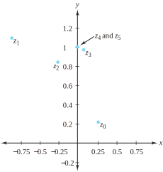
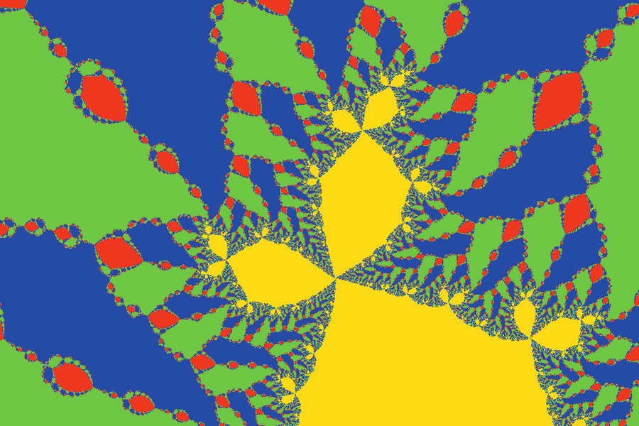
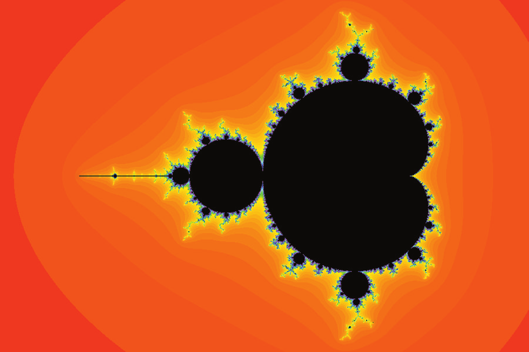
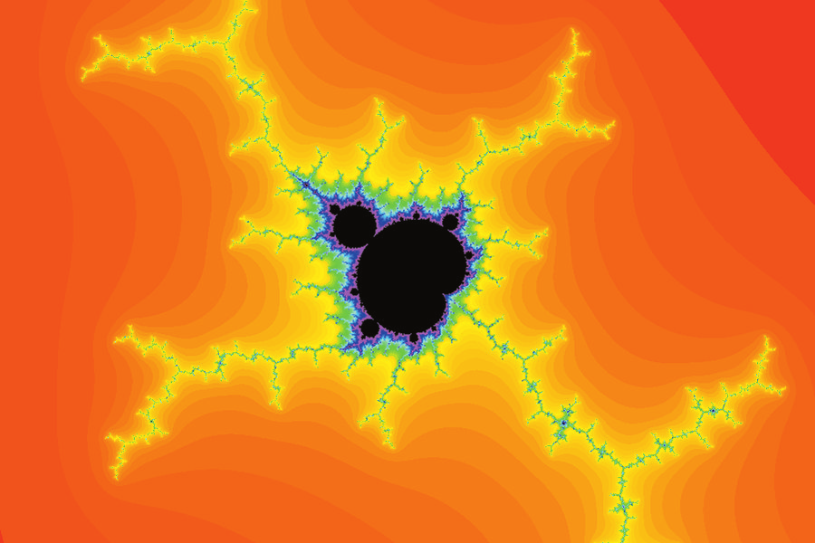

An impetus for studying complex analysis is the comparison of properties of real numbers and functions with their complex counterparts. In this section we take a look at Newton’s method for finding solutions to the equation \(f(z)=0\text{.}\) Then, by examining the more general topic of iteration, we will plunge into a breathtaking world of color and imagination. The mathematics surrounding this topic has generated a great deal of popular attention in the past few years.
Recall from calculus that Newton’s method proceeds by starting with a function \(f(x)\) and an initial “guess” of \(x_0\) as a solution to \(f(x)=0\text{.}\) We then generate a new guess \(x_1\) by the computation \(x_1=x_0-\frac{f(x_0)}{f\,'(x_0)}\text{.}\) Using \(x_1\) in place of \(x_0\text{,}\) this process is repeated, giving \(x_2=x_1-\frac{{f\,(x_1)}}{{f\,'(x_1)}}\text{.}\) We thus obtain a sequence of points \(\{x_k\}\text{,}\) where \(x_{k+1}=x_k-\frac{{f(x_k)}}{{\ f\,'(x_k)}}\text{.}\) The points \(\{x_k\}_{k=0}^{\infty}\) are called the iterates of \(x_0\text{.}\) For functions defined on the real numbers, this method gives remarkably good results, and the sequence \(\{x_k\}\) often converges to a solution of \(f(x) =0\) rather quickly. In the late 1800s, the British mathematician Arthur Cayley investigated the question of whether Newton’s method can be applied to complex functions. He wrote a paper giving an analysis for how this method works for quadratic polynomials and indicated his intention to publish a subsequent paper for cubic polynomials. Unfortunately, Cayley died before producing this paper. As you will see, the extension of Newton’s method to the complex domain and the more general question of iteration are quite complicated.
Example4.2.1.
Trace the next five iterates of Newton’s method for an initial guess of \(z_0=\frac{1}{4}+\frac{1}{4}i\) as a solution to the equation \(f(z) =0\text{,}\) where \(f(z) =z^2+1\text{.}\)
Solution.
For any guess \(z\) for a solution, Newton’s method gives as the next guess the number \(z-\frac{f(z)}{f\,'(z)}=\frac{z^2-1}{2z}\text{.}\)Table 4.2.2 gives the iterates, rounded to five decimal places.
Figure 4.2.3 shows the relative positions of these points on the \(z\) plane. Note that the points \(z_4\) and \(z_5\) are so close together that they appear to coincide, and that the value for \(z_5\) agrees to five decimal places with the actual solution \(z=i\text{.}\)
Table4.2.2.The iterates of { {\(z_0=\frac{1}{4}+\frac{1}{4}i\)}} for Newton’s method applied to { {\(f(z) =z^2+1\)}}

Figure4.2.3.The iterates of { {\(z_0=\frac{1}{4}+\frac{1}{4}i\)}} for Newton’s method applied to \(f(z) =z^2+1\)
The complex version of Newton’s method also appears to work quite well. Recall, however, that with functions defined on the reals, not every initial guess produces a sequence that converges to a solution. Example 4.2.4 shows that the same is true in the complex case.
Example4.2.4.
Show that Newton’s method fails for the function \(f(z)=z^2+1\) if the initial guess is a real number.
Solution.
From Example 4.2.1 we know that, for any guess \(z\) as a solution of \(z^2+1=0\text{,}\) the next guess at a solution is \(N(z) =z-\frac{f(z)}{f\,'(z)}=\frac{z^2-1}{2z}\text{.}\) We let \(z_0\) be any real number and \(\{z_k\}\) be the sequence of iterations produced by the initial seed \(z_0\text{.}\) If for any \(k\text{,}\)\(z_k=0\text{,}\) the procedure terminates, as \(z_{k+1}\) will be undefined. If all the terms of the sequence \(\{z_k\}\) are defined, an easy induction argument shows that all the terms of the sequence are real. Because the solutions of \(z^2+1=0\) are \(\pm i\text{,}\) the sequence \(\{z_k\}\) cannot possibly converge to either solution. In the exercises we ask you to explore in detail what happens when \(z_0\) is in the upper or lower half-plane.
The case for cubic polynomials is more complicated than that for quadratics. Fortunately, we can get an idea of what’s going on by doing some experimentation with computer graphics. We begin with the cubic polynomial \(f(z) =z^3+1\text{.}\) (Recall that the roots of this polynomial are at \(-1, \, \frac{1}{2}+\frac{\sqrt{3}}{2}i\text{,}\) and \(\frac{1}{2}-\frac{\sqrt{3}}{2}i\text{.}\)) We associate a color with each root (blue, red, and green, respectively). We form a rectangular region \(R\text{,}\) which contains the three roots of \(f(z)\text{,}\) and partition this region into equal rectangles \(R_{ij}\text{.}\) We then choose a point \(z_{ij}\) at the center of each rectangle and for each of these points we apply the following algorithm.
With \(N(z) =z-\frac{f(z)} {f\,'(z)}\text{,}\) compute \(N(z_{ij})\text{.}\) Continue computing successive iterates of this initial point until we either are within a certain preassigned tolerance (say, \(\varepsilon\)) of one of the roots of \(f(z)=0\text{,}\) or until the number of iterations has exceeded a preassigned maximum.
If Step 1 leaves us within \(\varepsilon\) of one of the roots of \(f(z)\text{,}\) we color the entire rectangle \(R_{ij}\) with the color associated with that root. Otherwise, we assume that the initial point \(z_{ij}\) does not converge to any root, and we color the entire rectangle yellow.
Note that this algorithm doesn’t prove anything. In Step 2, there is no a priori reason to justify the assumption mentioned, nor is there any necessity for an initial point \(z_{ij}\) to have its sequence of iterates converging to one of the roots of \(f(z) =0\) just because a particular iteration is within \(\varepsilon\) of that root. Finally, the fact that one point in a rectangle behaves in a certain way does not imply that all the points in that rectangle behave in a like manner. Nevertheless, we can use this algorithm as a basis for mathematical explorations. Indeed, computer experiments such as the one described have contributed to a lot of exciting mathematics during the past 30 years. Figure 4.2.5 shows the results for the cubic polynomial \(f(z)=z^3+1\text{.}\)
The points in the blue, red, and green regions are those “initial guesses” that will converge to the roots \(-1\text{,}\)\(\frac{1}{2} +\frac{\sqrt{3}}{2}i\text{,}\) and \(\frac{1}{2}-\frac{\sqrt{3}}{2}i\text{,}\) respectively. (The roots themselves are located in the middle of the three largest colored regions.) The complexity of this picture becomes apparent when you observe that, wherever two colors appear to meet, the third color emerges between them. But then, a closer inspection of the area where this third color meets one of the other colors reveals again a different color between them. This process continues with an infinite complexity.
There appear to be no yellow regions with any area in Figure 4.2.5, indicating that at least most initial guesses \(z_0\) at a solution to \(z^3+1=0\) will produce a sequence \(\{z_k\}\) that converges to one of the three roots. Figure 4.2.6 demonstrates that this outcome does not always occur. It shows the results of applying the preceding algorithm to the polynomial \(f(z)=z^3+(-0.26+0.02i)z+(-0.74+0.02i)\text{.}\)
The yellow area shown is often referred to as the rabbit. It consists of a main body and two ears, and is an example of a fractal image. Mathematicians use the term fractal to indicate an object that is self-similar and infinitely replicating. Figure 4.2.7 illustrates this phenomenon by zooming in on a portion of Figure 4.2.6. You can see that each of the ears consists of a main body and two ears, and so on.

Figure4.2.7.A zoom of the rabbit
In 1918, the French mathematicians Gaston Julia and Pierre Fatou noticed this fractal phenomenon when exploring iterations of functions not necessarily connected with Newton’s method. Beginning with a function \(f(z)\) and a point \(z_0\text{,}\) they computed the iterates
and investigated properties of the sequence \(\{z_k\}\text{.}\) Their findings did not receive a great deal of attention, largely because computer graphics were not available at that time. With the recent proliferation of computers, it is not surprising that these investigations were revived in the 1980s. Detailed studies of Newton’s method and the more general topic of iteration were undertaken by a host of mathematicians including Curry, Devaney, Douady, Garnett, Hubbard, Mandelbrot, Milnor, and Sullivan. We now turn our attention to some of their results by focusing on the iterations produced by quadratics of the form \(f_c(z) =z^2+c\text{.}\) You will be surprised at the startling pictures that graphical iterates of such a simple function produce.
Example4.2.8.
For \(f_c(z) =z^2+c\text{,}\) analyze all possible iterations when \(c=0\text{,}\) that is, for the function \(f_0\) defined by \(f_0(z) =z^2+0\text{.}\)
Solution.
We leave as an exercise the claim that, if \(|z_0|\lt 1\text{,}\) the sequence will converge to 0; if \(|z_0|>1\text{,}\) the sequence will be unbounded; and if \(|z_0|=1\text{,}\) the sequence will either oscillate around the unit circle or converge to 1.
For the function \(f_c\text{,}\) defined by \(f_c(z) =z^2+c\text{,}\) and an initial seed \(z_0\text{,}\) the set of iterates given by \(z_1=f_c(z_0)\text{,}\)\(z_2=f_c(z_1)\text{,}\) … is also called the orbit of \(z_0\) generated by \(f_c\text{.}\) We let \(K_c\) denote the set of points with a bounded orbit for \(f_c\text{.}\) Example 4.9 shows that \(K_0\) is the closed unit disk \(\overline{D}_1(0)\text{.}\) The boundary of \(K_c\) is known as the Julia set for the function \(f_c\text{.}\) Thus the Julia set for \(f_0\) is the unit circle \(C_1(0)\text{.}\) It turns out that \(K_c\) is a nice simple set only when \(c=0\) or \(c=-2\text{;}\) otherwise, \(K_c\) is fractal. Figure 4.2.9 shows \(K_{-1.25}\text{.}\) The variation in colors indicate the length of time it takes for points to become “sufficiently unbounded” according to the following algorithm, which uses the same notation as our algorithm for iterations via Newton’s method. It has reminded some of St. Mark’s square in Venice when flooding occurs.
Compute \(f_c(z_{ij})\text{.}\) Continue computing successive iterates of this initial point until the absolute value of one of the iterations exceeds a certain bound (say, \(L\)), or until the number of iterations has exceeded a preassigned maximum.
If Step 1 leaves us with an iteration whose absolute value exceeds \(L\) , we color the entire rectangle \(R_{ij}\) with a color indicating the number of iterations needed before this value was attained (the more iterations required, the darker the color). Otherwise, we assume that the orbit of the initial point \(z_{ij}\) do not diverge to infinity, and we color the entire rectangle black.
Note, again, that this algorithm doesn’t prove anything. It merely guides the direction of our efforts to do rigorous mathematics.
Figure 4.2.10 shows the Julia set for the function \(f_c\text{,}\) where \(c=-0.11-0.67i\text{.}\) The boundary of this set is different from the boundaries of the other sets we have seen, in that it is disconnected. Julia and Fatou independently discovered a simple criterion that can be used to tell when the Julia set for \(f_c\) is connected or disconnected. We state their result, but omit the proof, as it is beyond the scope of this text.
The boundary of \(K_c\) is connected if and only if \(0\in K_c\text{.}\) In other words, the Julia set for \(f_c\) is connected if and only if the orbit of 0 is bounded.
Example4.2.12.
Show that the Julia set for \(f_{i}\) is connected.
Solution.
We apply Theorem 4.2.11 and compute the orbit of 0 for \(f_{i}(z)=z^2+i\text{.}\) We have \(f_{i}(0) =i\text{,}\)\(f_{i}(i) =-1+i\text{,}\)\(f_{i}(-1+i) =-i\text{,}\) and \(f_{i}(-i) =-1+i\text{.}\) Thus the orbit of 0 are the sequence \(\{ 0, \; -1+i, \; -i, \; -1+i, \; -i, \; -1+i, \;-i,\ldots \}\text{,}\) which is clearly a bounded sequence. Thus, by Theorem 4.2.11, the Julia set for \(f_{i}\) is connected.
In 1980, the Polish-born mathematician Benoit Mandelbrot used computer graphics to study the set
\begin{align*}
M \amp = \{c:\text{ the Julia set for } f_c \text{ is connected } \}\\
\amp = \{c:\text{ the orbit of } 0 \text{ determined by } f_c \text{ is bounded } \}\text{.}
\end{align*}
The set \(M\) is known as the Mandelbrot set. Figure 4.2.13 shows its intricate nature.

Figure4.2.13.The Mandelbrot set
Technically, the Mandelbrot set is not fractal because it is not self-similar (although it may look that way). However, it is infinitely complex. Figure 4.2.14 shows a zoom over the upper portion of the set shown in Figure 4.2.13. Likewise, Figure 4.2.15 zooms in on the upper portion of Figure 4.2.14. In Figure 4.2.15 you can see the emergence of another structure very similar to the Mandelbrot set that we began with. Although it isn’t an exact replica, if you zoomed in on this set at almost any spot, you would eventually see yet another “Mandelbrot clone” and so on ad infinitum! In the remainder of this section we look at some of the properties of this amazing set.
Figure4.2.14.A zoom of the upper-portion of Figure 4.2.13

Figure4.2.15.A zoom of the upper-portion of Figure 4.2.14
Example4.2.16.
Show that \(\{c:|c| \le \frac{1}{4}\} \subseteq M\text{.}\)
Solution.
Let \(\{a_n\} _{n=0}^{\infty}\) be the orbit of 0 generated by \(f_c(z) =z^2+c\text{,}\) where \(|c|\le \frac{1}{4}\text{.}\) Then
\begin{align*}
a_0 \amp = 0,\\
a_1 \amp = f_c(a_0) =a_0^2+c=c,\\
a_2 \amp = f_c(a_1) =a_1^2+c, \text{ and in general, }\\
a_{n+1} \amp = f_c(a_n) =a_n^2+c\text{.}
\end{align*}
We show that \(\{a_n\}\) is bounded, and, in particular, we show that \(|a_n|\le \frac{1}{2}\) for all \(n\) by mathematical induction. Clearly \(|a_n|\le \frac{1}{2}\) if \(n=0\) or 1. We assume that \(|a_n|\le \frac{1}{2}\) for some value of \(n\ge 1\) (our goal is to show \(| a_{n+1}|\le \frac{1}{2}\)). Now,
\begin{align*}
|a_{n+1}| \amp = |a_n^2+c|\\
\amp \le |a_n^2|+|c| (\text{ by the triangle inequality } )\\
\amp \le \frac{1}{4}+\frac{1}{4}=\frac{1}{2} \text{ ( by our induction assumption and the fact that } |c| \le \frac{1}{4}\text{.}
\end{align*}
In the exercises, we ask you to show that, if \(|c|>2\text{,}\) then \(c\notin M\text{.}\) Thus the Mandelbrot set depicted in Figure 4.2.13 contains the disk \(\overline{D}_{\frac{1}{4}}(0)\) and is contained in the disk \(\overline{D}_2(0)\text{.}\)
We can use other methods to determine which points belong to \(M\text{.}\) To do so, we need some additional vocabulary.
Definition4.2.17.Fixed Point.
The point \(z_0\) is a fixed point for the function \(f\) if \(f(z_0)=z_0\text{.}\)
Definition4.2.18.Attracting Point.
The point \(z_0\) is an attracting point for the function \(f\) if \(|f\,'(z_0)|\lt 1\text{.}\)
Theorem 4.2.19 explains the significance of these terms.
Theorem4.2.19.
Suppose that \(z_0\) is an attracting fixed point for the function \(f\text{.}\) Then there is a disk \(D_{r}(z_0)\) about \(z_0\) such that the iterates of all the points in \(D_{r}^{\ast }(z_0)\) are drawn toward \(z_0\) in the sense that, if \(z\in D_{r}^*(z_0)\text{,}\) then \(|f(z) -z_0|\lt |z-z_0|\text{.}\) In fact, if \(z_k\) is the \(k\)th iterate of \(z\in D_{r}^*(z_0)\text{,}\) then \(\lim\limits_{k \to \infty}z_k = z_0\text{.}\)
Proof.
Because \(z_0\) is an attracting point for \(f\text{,}\) we know that \(|f\,'(z_0)|\lt 1\text{.}\) And because \(f\) is differentiable at \(z_0\text{,}\) we know that for any \(\varepsilon>0\) there exists some \(r>0\) such that if \(z\in D_{r}^*(z_0)\text{,}\) then \(|\frac{f(z) -f(z_0)}{z-z_0}-f\,'(z_0) |\lt \varepsilon\text{.}\) If we set \(\varepsilon=1-|\,f\,'(z_0) |\text{,}\) then we have for all \(z\) in \(D_{r}^*(z_0)\) that
which gives \(\big|\frac{f(z) -f(z_0)}{z-z_0}\big|\lt 1\text{.}\) Thus \(|f(z) -f(z_0)| \lt |z-z_0|\text{.}\) Because \(z_0\) is a fixed point for \(f\text{,}\) this last inequality implies that \(|f(z) -z_0| \lt | z-z_0|\text{,}\) which is the first part of our theorem.
The proof that \(\lim\limits_{k \to \infty}z_k = z_0\) is left as an exercise.
In 1905, Fatou showed that, if the function \(f_c\) defined by \(f_c(z) =z^2+c\) has attracting fixed points, then the orbit of 0 determined by \(f_c\) must converge to one of them. Because a convergent sequence is bounded, this condition implies that \(c\) must belong to \(M\text{.}\) In the exercises we ask you to show that the main cardioid-shaped body of \(M\) in Figure 4.2.13 is composed of those points \(c\) for which \(f_c\) has attracting fixed points. You will find Theorem 4.2.20 to be a useful characterization of these points.
Theorem4.2.20.
The function \(f_c(z) = z^2+c\) has attracting fixed points iff \(|1+\sqrt{1-4c}|\lt 1\) or \(|1-\sqrt{1-4c}| \lt 1\text{,}\) where the square root designates the principal square root function.
Proof.
The point \(z_0\) is a fixed point for \(f_c\) iff \(f_c(z_0)=z_0\text{.}\) In other words, iff \(z_0^2-z_0+c = 0\text{.}\) By Theorem 1.5.12, the solutions to this equation are
where again the square root designates the principal square root function. Now, \(z_0\) is an attracting point iff \(|f\,_c'(z_0)| = |2z_0| \lt 1\text{.}\) Combining this result with the solutions for \(z_0\) gives our desired result.
of \(n\) complex numbers such that \(z_k=f(z_{k-1})\text{,}\) for \(1\le k\le n-1\) and \(f(z_{n-1}) = z_0\text{.}\)
Definition4.2.22.Attracting.
An n-cycle \(\{z_0, \, z_1, \ldots, \, z_{n-1}\}\) for a function \(f\) is said to be attracting if \(|g_n\,'(z_0)| \lt 1\text{,}\) where \(g_n\) is the composition of \(f\) with itself \(n\) times. For example, if \(n=2\text{,}\) then \(g_2(z) = \big(f \circ f\big)(z) = f\big(f(z)\big)\text{.}\)
Example4.2.23.
Example 4.2.12 shows that \(\{-1+i,\,-i\}\) is a 2-cycle for the function \(f_{i}\text{.}\) It is not an attracting 2-cycle because \(g_2(z) =z^4+2iz^2+i-1\) and \(g_2\,'(z) =4z^3+4iz\text{.}\) Hence \(|g_2\,'(-1+i)| = |4+4i|\text{,}\) so \(|g_2\,'(-1+i)| > 1\text{.}\)
In the exercises, we ask you to show that, if \(\{z_0, \, z_1,\ldots ,z_{n-1}\}\) is an attracting \(n\)-cycle for a function \(f\text{,}\) then not only does \(z_0\) satisfy \(|g_n\,'(z_0) |\lt 1\text{,}\) but also that \(|g_n\,'(z_k) |\lt 1\text{,}\) for \(k=1, \, 2, \ldots, \, n-1\text{.}\)
One can prove that the large disk to the left of the cardioid in Figure 4.2.13 consists of those points \(c\) for which \(f_c(z)\) has a 2-cycle. The large disks above and below the main cardioid disk are the points \(c\) for which \(f_c(z)\) has a 3-cycle.
Continuing with this scheme, we see that the idea of \(n\)-cycles explains the appearance of the “buds” that you see on Figure 4.2.13 . It does not, however, begin to do justice to the enormous complexity of the entire set. Even Figures 4.2.14 and Figure 4.2.15 are mere glimpses into its awesome beauty.
ExercisesExercises
1.
Consider the function \(f(z) =z^2+1\text{,}\) where
Show that, if \(\mathrm{Im}(z_0) >0\text{,}\) the sequence \(\{z_k\}\) formed by successive iterations of \(z_0\) via \(N(z)\) lies entirely within the upper half-plane.
Solution.
If \(z=r(\cos \theta +i\sin \theta) \ne 0\text{,}\) show \(N(z) = \frac{1}{2}(r-\frac{1}{r}) \cos \theta + i\frac{1}{2}(r+\frac{1}{r}) \sin \theta\text{.}\) The result now follows—explain why!
(b)
Show that a similar result holds if \(\mathrm{Im}(z_0) \lt 0\text{.}\)
(c)
Use induction to show that, if all the terms of the sequence \(\{ z_k\}\) are defined, then the sequence \(\{z_k\}\) is real, provided \(z_0\) is real.
Solution.
If \(z_0\ne 0\) is real then obviously \(z_1=N( z_1) =\frac{1}{2}(z_0-\frac{1}{z_0})\) is real. Assume \(z_n\) is real for some \(n>1\text{.}\) Then \(z_{n+1}=N(z_n) = \frac{1}{2}(z_n-\frac{1}{z_n})\) is also real, provided \(z_n \ne 0\text{.}\)
(d)
Discuss whether \(\{z_k\}\) converges to \(i\) if \(\mathrm{Im}(z_0) >0\) and to \(-i\) if \(\mathrm{Im}(z_0) \lt 0\text{.}\)
2.
Formulate and solve problems analogous to those in Exercise 1 for the function \(f(z) =z^2-1\text{.}\)
3.
Prove that Newton’s method always works for polynomials having degree 1 (functions of the form \(f(z) =az+b\text{,}\) where \(a\ne 0\)). How many iterations are necessary before Newton’s method produces the solution \(z = -\frac{b}{a}\) to \(f(z) =0\text{?}\)
Solution.
For \(f(z) =az+b\text{,}\) if our initial guess is \(z_0\text{,}\) then \(z_1=z_0-\frac{az_0+b}{a}=-\frac{b}{a}\text{.}\) But this is the solution to the equation \(f(z)=0\text{,}\) so our iteration either stops here or with \(z_0\) (if by chance we had set \(z_0=-\frac{b}{a}\)).
4.
Consider the function \(f_0(z)=z^2\) and an initial point \(z_0\text{.}\) Let \(\{z_k\}\) be the sequence of iterates of \(z_0\) generated by \(f_0\text{.}\) That is, \(z_1 = f_0(z_0), \, z_2 = f_0(z_1)\text{,}\) and so on.
(a)
Show that, if \(|z_0|\lt 1\text{,}\) the sequence \(\{z_k\}\) converges to 0.
(b)
Show that, if \(|z_0|>1\text{,}\) the sequence \(\{z_k\}\) is unbounded.
(c)
Show that, if \(|z_0|=1\text{,}\) the sequence \(\{z_k\}\) either converges to 1 or oscillates around the unit circle. Give a simple criterion that you can apply to \(z_0\) that will reveal which of these two paths \(\{z_k\}\) takes.
5.
Show that the Julia set for \(f_{-2}(z)\) is connected.
Solution.
The Julia set for \(f_{-2}(z)=z^2-2\) is connected by Theorem 4.2.11 because the orbit of 0 under \(f_2\) is \(\{-2,\,2,\,2,\,2,\,\ldots\}\text{,}\) which is a bounded set.
6.
Determine the precise structure of the set \(K_{-2}\text{.}\)
7.
Prove that if a complex number \(c\) is in the Mandelbrot set, then its conjugate \(\overline{c}\) is also in the Mandelbrot set. Thus, the Mandelbrot set is symmetric about the \(x\) axis. \hint{Use mathematical induction.}
Solution.
Suppose \(c \in M\text{,}\) and let \(\{z_k\}\) be the orbit of 0 under \(f_c\text{.}\) By definition of \(M\text{,}\) there is some real number \(N\) such that \(|z_k|\lt N\) for all \(k\text{.}\) Let \(\{w_k\}\) be the orbit of 0 under \(f_{\bar{c}}\text{.}\) Show by induction that \(w_k=\bar{z}_k\) for all \(k\text{.}\) Once you have that, it is straight forward to conclude that the set \(\{w_k\}\) is bounded.
8.
Show that, if \(c\) is any real number greater than \(\frac{1}{4}\text{,}\) then \(c\) is not in the Mandelbrot set. Note: Combining this condition with Example 4.2.16 shows that the cusp in the cardioid section of the Mandelbrot set occurs precisely at \(c=\frac{1}{4}\text{.}\)
9.
Find a value for \(c\) that is in the Mandelbrot set such that its negative, \(-c\text{,}\) is not in the Mandelbrot set.
Solution.
There are many examples. The number \(-2\text{,}\) is in the Mandelbrot set, but its negative, \(2\text{,}\) is not. Whether you use this example or not, justify your assertion!
10.
Show that the points \(c\) that solve the inequalities of Theorem 4.2.20 form a cardioid. This cardioid is the main body of the Mandelbrot set shown in Figure 4.2.13. \hint{It may be helpful to write the inequalities of Theorem 4.2.20 as
Use Theorem 4.2.20 and the paragraph immediately before it to show that the point \(-\frac{1}{4}\sqrt{3}i\) belongs to the Mandelbrot set.
Solution.
If we let \(c=-\frac{1}{4}\sqrt{3}i\text{,}\) then \(\Big|1-\sqrt{1-4c}\Big|=\Big|1-\sqrt{1+\sqrt{3}i}\Big|=\Big|1-\big(\frac{\sqrt{2}}{2}\sqrt{3}+\frac{\sqrt{2}}{2}i\big)\Big|\) (show the details for this conclusion). But this last quantity equals \(\sqrt{3-\sqrt{6}}\) (explain), which is less than 1 (again, explain).
12.
Suppose that \(\{z_0, \, z_1\}\) is a 2-cycle for \(f\text{.}\)
(a)
Show that, if \(z_0\) is attracting for \(g_2(z)\text{,}\) then so is the point \(z_1\text{.}\) \hint{Differentiate \(g_2(z)=f(f(z))\text{,}\) using the chain rule, and show that \(g_2\,'(z_0) =g_2\,'(z_1)\text{.}\)}
(b)
Generalize part (a) to \(n\)-cycles.
13.
Prove that \(\lim_{k \to \infty}z_k=z_0\) in Theorem 4.2.19.
Solution.
Since \(|f\,'(z_0) |\lt 1\text{,}\) we can choose \(\rho\) such that \(|f\,'z_0) |\lt \rho\lt 1\text{.}\) Using the same technique as Theorem 4.2.19, show that if \(z\in D_{r}^{\ast }( z_0)\text{,}\) then \(|f(z) -z_0|\lt \rho |z-z_0|\text{.}\) That is, \(|z_1-z_0| \lt \rho|z-z_0|\text{,}\) where \(z_1=f(z)\text{.}\) An easy induction argument now gives that, for all \(k\text{,}\)\(|z_k-z_0|\lt \rho^k|z-z_0|\text{,}\) where \(z_k\) is the \(k^{th}\) iterate of \(z_0\text{.}\) Since \(\rho \lt 1\text{,}\) this implies \(\lim\limits_{k \to \infty}z_k=z_0\text{.}\) Show the details.